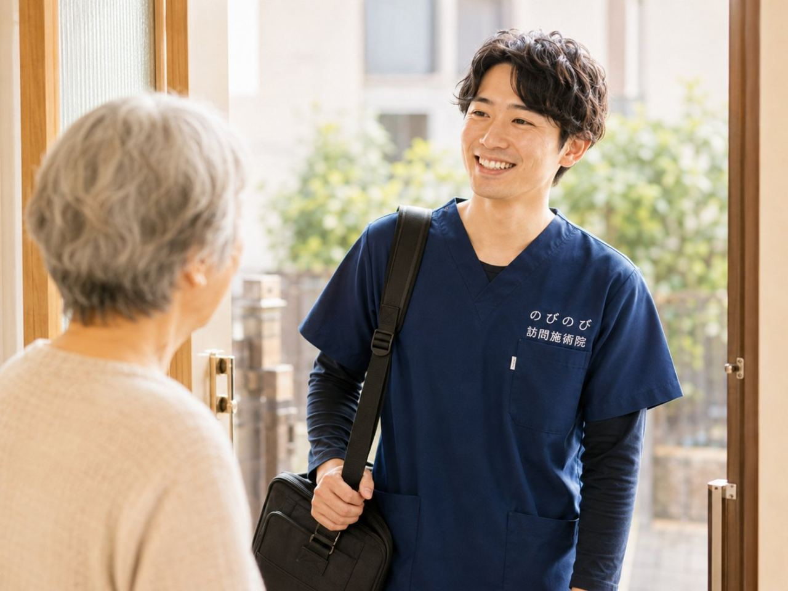

食が細くなって元気がない、痩せてきた。こうした低栄養やフレイルの入り口では、体を温めてめぐりを整え、動く力を保つ訪問鍼灸マッサージがお手伝いできます。医師の同意にもとづく医療保険（鍼灸で算定）を使い、自宅で1名が1種類を受けたときの負担は1割で約395円ほど（総額3,950円）。国家資格をもつ施術者が伺い、機能訓練も組み合わせます。これらについて別途の料金はいただきません。ただし、急に食べられない、短い間の体重減少、飲み込むとむせるなどが気になるときは、まずかかりつけ医に相談を。医師や栄養の専門職と足並みをそろえ、食べて動ける暮らしを支えます。 施術は大阪府・兵庫県の対応エリアで、ご自宅にうかがって、はり・きゅう・マッサージを行います。最近、食が細くなった。痩せてきた。なんとなく元気がなく、疲れやすい。年齢を重ねると、食欲が落ちて栄養が足りなくなり、体力や筋力までじわじわ弱っていくことがあります。こうした心身の弱りはフレイルとも呼ばれ、早めに気づいて備えられるかどうかが分かれ道になります。のびのび訪問施術院は、通うのがむずかしくなった方のご自宅にうかがう、鍼灸専門の訪問施術院です。この記事では、低栄養や食欲低下とどう向き合い、それをどう支えるかをお話しします。
短くまとめます。体を動かしやすくし、めぐりを整えることで、活動や食欲のきっかけづくりを後押しします。
食が細くなると、なぜ体まで弱るのですか
年齢を重ねると、食が細くなる方が増えてきます。食べる量がへると、体をつくる栄養が足りなくなり、筋肉がやせ、体力が落ち、疲れやすくなります。すると動くのがおっくうになって、さらに食欲が落ちる。
こうした悪い流れに入ってしまうこともあります。この心身の弱りを放っておくと、介護が必要な状態へ近づく入り口になりかねません。だからこそ、早めに気づいて手を打つことが、とても大切になります。
気になる変化の裏に、病気が隠れていないか
食欲の低下や体重の減少の裏に、体の病気が隠れていることもあります。急に食べられなくなった、短い間に体重が大きく減った、飲み込むとむせる、お腹の痛みや発熱がある、気分がひどく沈んでいる。
こうしたときは、鍼灸を考える前に、まずかかりつけ医に相談してください。鍼やお灸の役目は、そうした病気の治療を土台にしたうえで、体の調子を整え、動く力を保つことを無理のない範囲で支えることです。
台所や食卓の様子まで、暮らしごと見る
ご自宅に伺ったら、最近の食欲や一日の食事の量、どんなものを食べているか、体重の変わり方、疲れやすさや動きの様子をていねいにうかがいます。あわせて、手足やお腹の冷え、肩や腰のこわばり、気分の沈みがないかも確かめます。食が細くなる背景には、体の不調や冷え、噛みにくさ、気持ちの落ち込みなど、いくつもの要素がからんでいることがたびたびあります。
食事の場面や台所の様子、いつ・誰と食べているかまで見えるのは、暮らしのなかに伺う訪問ならでは。どこから整えれば食べて動く力を取り戻しやすいかを、その方の暮らしごと考えます。
鍼やお灸と機能訓練で、食べる力・動く力を後押し
鍼やお灸には、体を温めてめぐりを整え、こわばりや疲れを和らげる働きが期待できます。お腹や腰を温めることで胃腸のはたらきが整いやすくなり、気分が落ち着くと感じられる方もいます。ただし、効果のあらわれ方には個人差があります。のびのびでは、鍼やお灸に加えて、落ちてきた筋力を保つための機能訓練も組み合わせます。いずれも施術の一部で、別に料金をいただくことはありません。
これらは、医師による診断や治療、管理栄養士による栄養の指導に置き換わるものではなく、それを支える補助のケアです。負担にならない範囲で、食べて動く暮らしを取り戻す流れづくりをお手伝いします。
食べることと動くこと、二つは支え合っています
食欲を保つには、体を動かすことも助けになります。少し動くとお腹がすき、食べればまた動く力がわく。この良い流れをつくることが、フレイルを防ぐ支えになります。
反対に、動かないでいると食欲も落ちやすくなります。施術で体を動かしやすくしておくことが、食べて動く暮らしを取り戻す一歩になればと考えます。
ゆるやかな変化に、早く気づく見守り役として
低栄養やフレイルは、ある日はっきり始まるというより、少しずつ進んでいくものです。そのため、定期的に伺って体の様子を見ていくなかで、「このところ足が細くなってきた」「前より疲れやすそうだ」といった小さな変化に気づけることがあります。
気になる変化があれば、ご家族やケアマネジャー、かかりつけ医にお伝えし、早めに手を打つきっかけにしていただけます。訪問は、施術そのものだけでなく、こうした変化の見守り役にもなれればと考えています。
食卓でできる、無理のない工夫
施術に加えて、日々の工夫も助けになります。少量でも栄養のあるものを回数を分けてとる、好きなものや食べやすいものを取り入れる、水分をこまめにとる、できる範囲で体を動かす、できれば誰かと一緒に食べる。
食事は栄養だけでなく、暮らしの楽しみでもあります。気になることは、かかりつけ医や、必要なら栄養の専門職にも相談してください。
口の健康が、食べる力を土台から支える
しっかり食べるには、口の健康も欠かせません。歯が痛む、入れ歯が合わない、口の中が乾く、飲み込みにくい。こうしたことがあると、食べられるものがへり、栄養が足りなくなりがちです。
気になることがあれば、歯科や、必要なら飲み込みの専門職に相談してみてください。口の健康を保つことは、食べる楽しみと、体をつくる栄養の両方を支え、食べて動ける暮らしの大切な土台になります。
少量でも、たんぱく質を意識してとる
筋肉や体をつくるうえで大切なのが、たんぱく質です。肉や魚、卵、豆腐、乳製品などに多く含まれます。食が細くなると、あっさりしたものに偏りがちですが、少量でもたんぱく質を意識してとることが、筋力を保つ助けになります。
食べやすい形に工夫したり、回数を分けたりするのもよいでしょう。どんな食べ方が合うかは体の状態によりますので、気になるときは主治医や管理栄養士に相談してみてください。
出かけて疲れるより、家で体力を守る
体力が落ちている方にとって、通院はそれだけで大きな負担です。出かけて疲れきってしまい、そのせいでさらに食欲が落ちては、かえって逆効果になりかねません。家に伺う施術なら、体力をすり減らさずに体をいたわれます。
住み慣れた部屋で、いつもの場所で受けられるので、消耗を抑えながら整えていけます。食事や暮らしの様子をその場で一緒に確かめられるのも、訪問ならではの良さです。
フレイル予防は、みんなで支えるもの
低栄養やフレイルの予防は、鍼灸だけでできるものではありません。かかりつけ医、訪問看護、栄養の専門職、ケアマネジャー、そしてご家族。食事、運動、体調管理を、みんなで支えることが欠かせません。誰が何を担うのかは在宅サービスの違い早見表をご覧ください。
鍼灸はそのなかで、体を整え動く力を保つという面から役割を担います。早めに気づき、みんなで支える。それが、元気な暮らしを長く保つ力になります。
よくある質問
食が細く弱ってきた家族に訪問鍼灸マッサージは役立ちますか？
体を動かしやすくし、めぐりを整えることで、活動や食欲のきっかけづくりを後押しします。
低栄養は施術で改善しますか？
栄養そのものは食事や医療の領域です。体を楽にして「動く・食べる」を支える位置づけです。
フレイルでも保険で受けられますか？
フレイルにともなう慢性的なこわばり・痛みについて医師が必要と認め、通院がむずかしければ対象になる場合があります。
低栄養で家族ができることはありますか？
少量でも食べやすい工夫や、無理のない範囲で体を動かすことなどをお伝えします。

低栄養・フレイルを防ぐ｜食が細くなった高齢のご家族へ、訪問鍼灸マッサージでできること
続きを読む
首が下がる・体が前に倒れる（姿勢の変化）でお悩みの方へ｜訪問鍼灸マッサージ
続きを読む
起き上がり・立ち上がりがつらい高齢のご家族へ｜下肢の筋力低下を支える訪問鍼灸
続きを読む
あごの痛み・口の開けにくさ（顎関節症）でお悩みの方へ｜訪問鍼灸マッサージ
続きを読む
床ずれ予防と寝返り介助｜在宅でできる褥瘡ケアと訪問鍼灸マッサージ
続きを読む